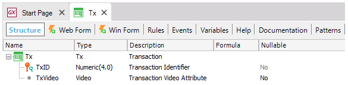
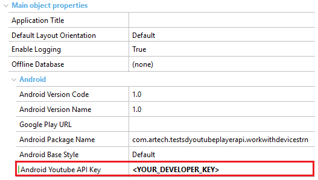
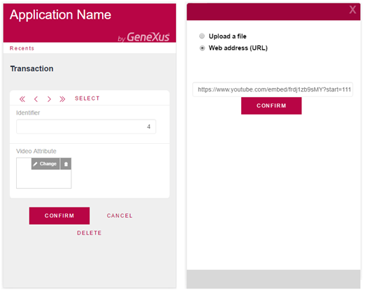
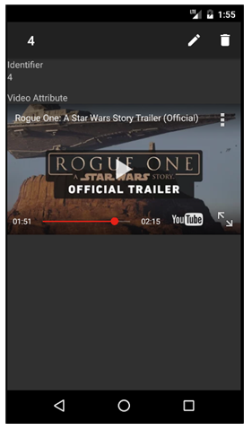

Sometimes it is more comfortable for users to display videos inside the application instead of launching another app to play the video. This article shows an example of how to use this feature and explains some facts about it. Step 1: Getting the developer keyThe application developer must obtain a developer key by registering the app. Step 2: Create the Transaction objectCreate a simple Transaction object with an Attribute of type Video, as shown in the image.  Step 3: Create the panels of the applicationApply the Work With pattern for Smart Devices on the Tx transaction object. Step 4: Setting some propertiesNow it's time to add the developer key. For this, select the WWSD object declared as "main". Then, navigate through the tree properties to Main Object Properties > Android and look for Android YouTube API Key property to set its value with your key (obtained in step 1).  Step 5: Modifying layoutsMake sure to set an appropriate height for the control. Do this by using the Rows style property of the Section(General) level table in the WorkWithDevicesTx object.
This means your video control needs to have that minimum size to be able to play YouTube videos. (In some cases that you have the video inside a table or grid, you need even more width for it to work correctly, for example, 500dpx110dp. Step 6: Adding Youtube videosFinally, launch the Developer Menu and go to the Tx transaction link (it can be used in mobile browsers taking advantage of RWD - Responsive Web Design).  Step 7: Done!Run the WorkWithDevicesTx object and check out your application on an Android device. Snapshots Notes
AvailabilityFrom version GeneXus 15 See also
|
| Backlinks |
| Android Google Services API Key property |
| Video data type |